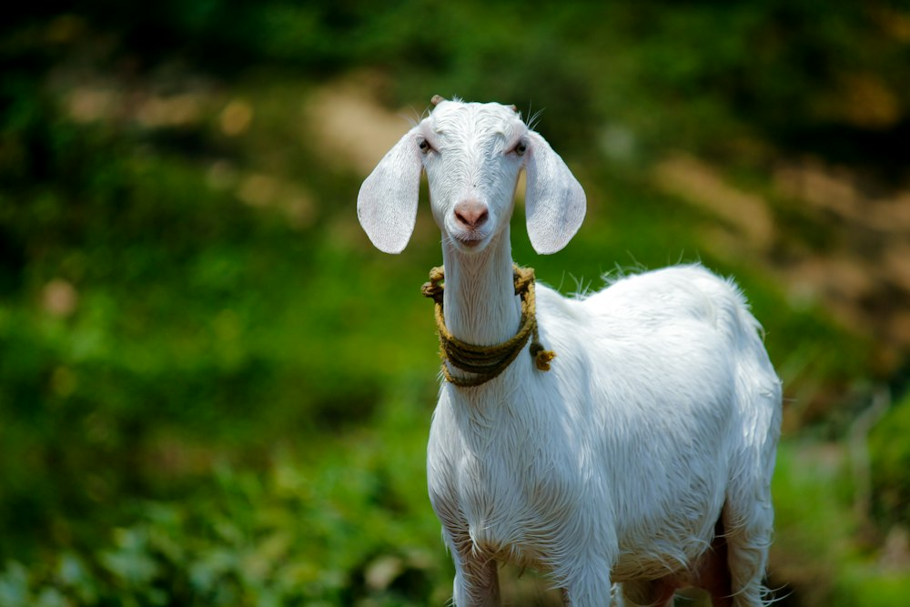
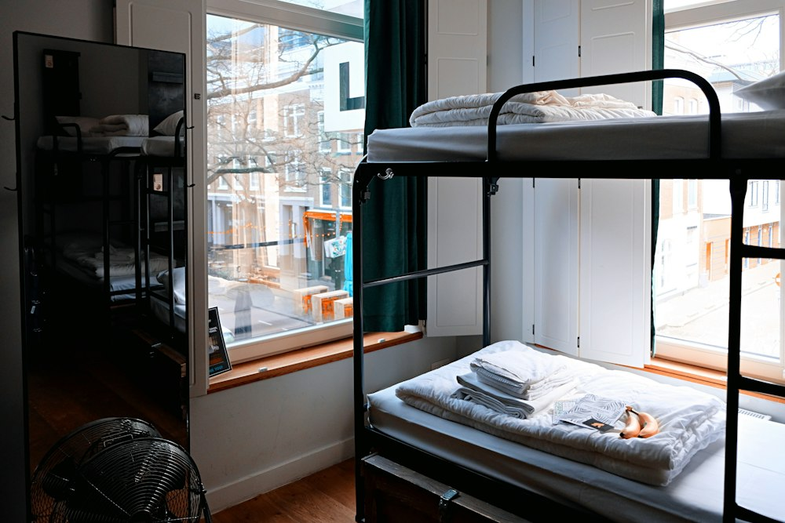

PENTERNAKAN AYAM
Bekalan ayam kampung dan ayam daging berkualiti tinggi yang dipelihara secara sihat dalam persekitaran terkawal. Sumber protein utama yang segar dan dijamin halal.
Menyediakan bekalan ternakan sihat, baka berkualiti tinggi, serta pengurusan ladang penternakan yang moden dan patuh syariah.
Bekalan ayam kampung dan ayam daging berkualiti tinggi yang dipelihara secara sihat dalam persekitaran terkawal. Sumber protein utama yang segar dan dijamin halal.
Kambing baka pilihan (Boer, Jamnapari, Biri-biri) untuk tujuan akikah, qurban, dan pembiakan. Dijaga rapi dengan pemakanan dedak berprotein dan rumput segar.


Lembu pedaging dan tenusu gred premium dengan rekod kesihatan dan imunisasi yang lengkap. Pilihan utama untuk perayaan, bekalan daging segar, dan industri tenusu.
Itik telur dan itik penelur berkualiti tinggi yang menghasilkan telur asin gred A serta daging itik segar untuk pasaran tempatan dan restoran.
